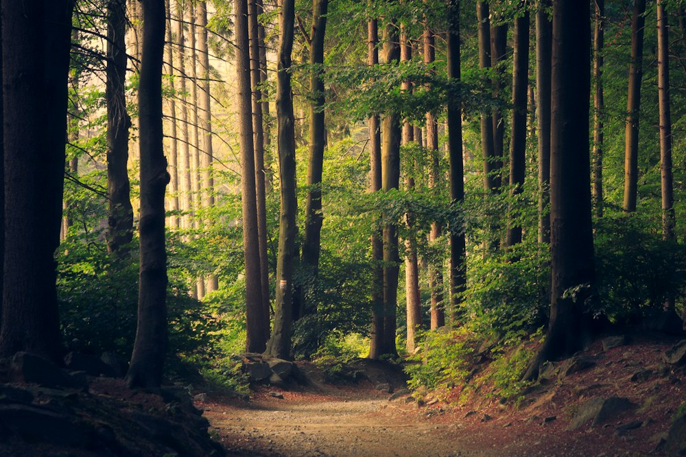

Follow the light.
Take the long way to nowhere in particular. There is always something worth slowing down for.
A place to put the world on pause.
An imagined retreat between
the forest and the water.
Morning light across the lake. The scent of warm timber. A long walk with no particular destination. Saaren imagines a small, considered retreat built around the things we tend to hurry past.
Simple spaces. Good company. A little room to be yourself.

Take the long way to nowhere in particular. There is always something worth slowing down for.
Timber, steam, lake water. A sauna ritual imagined as the centre of an unhurried day.
Uncomplicated rooms, natural materials, and a view that does most of the talking.
Saaren is a fictional hospitality concept created by Radu Studio to explore an editorial hospitality experience. There is no hotel to book. Want this level of care for your business?
Talk to Radu Studio→